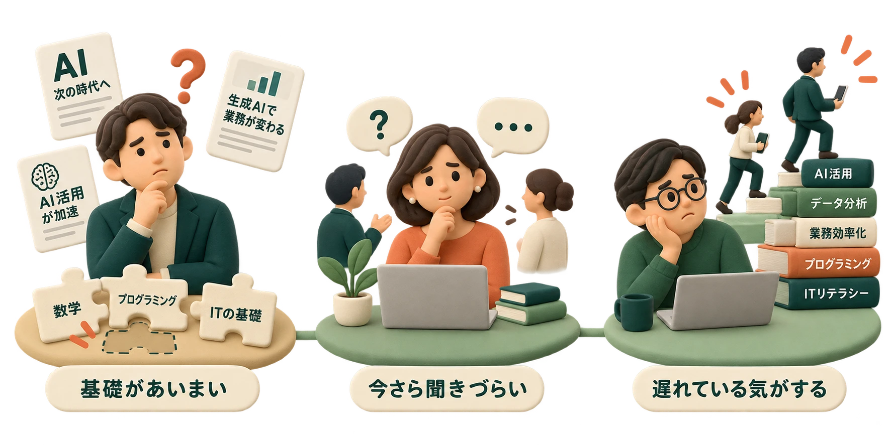
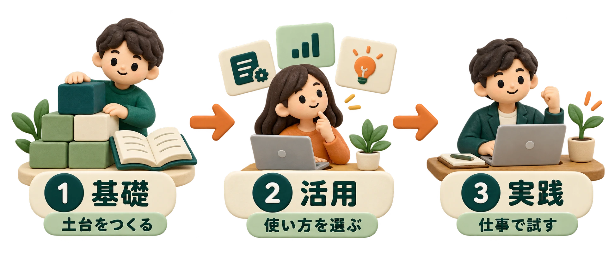
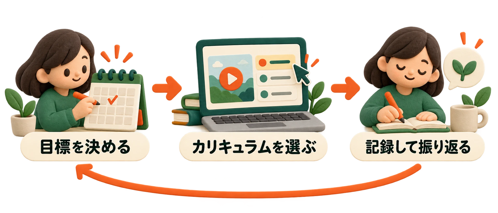

基礎がつながっていない
新しいAIを知っても、用語や仕組みがあいまいで、使い方を自分で判断しにくい。
LEARN & PRACTICE
基礎から、仕事で使える一歩へ。
AIの基礎を知り、使うツールを選び、仕事の中で試すまで。いろは｜IROHAは、自分のペースで学びを実践につなげるための学習サービスです。

YOUR CHALLENGES
情報は届いている。でも、自分の仕事で使うところまでは進めない。こんな戸惑いはありませんか。

新しいAIを知っても、用語や仕組みがあいまいで、使い方を自分で判断しにくい。
基本的な質問だからこそ、誰に聞けばよいかわからず、そのままになってしまう。
周りが活用しているように見えて、何から学び直せばよいのか迷ってしまう。
まずは、今の自分に必要な基礎から。
IROHAで、学ぶ順番を整えていきましょう。
ABOUT IROHA
新しい情報を追うだけではなく、AIの基本を理解し、目的に合うツールを選び、実務の小さな場面で試していく。IROHAは、その道筋を自分のペースで進められるよう設計しています。

AIの仕組み・得意なことと限界、情報の扱い方を学ぶところから始めます。
ChatGPT・Claude・Geminiなどの特徴を知り、目的に合う使い方を考えます。
学んだことを小さく試し、振り返りながら、自分に合う活用方法を育てます。
LEARNING FLOW
週間の学習予定を立て、カリキュラムを選び、学習時間や振り返りを記録しながら学びを進めます。修了バッジと学習履歴も確認できます。

ALSO INCLUDED

IROHAには、TAYORIの対象特典も含まれます。毎週の情報整理や解説に加え、対象の動画・セミナーも学びに活かせます。対象内容や提供条件は、各回の案内でお知らせします。
TAYORIの内容を見るPLAN / INFORMATION
現在は一般提供に向けて準備しています。契約のお申し込みは受け付けていませんが、ウェイトリストに登録できます。登録後はメールでご希望を伺い、無料相談や今後のご案内につなげます。登録だけでは契約・課金は始まりません。
職種による料金区分のない、共通の個人プランです。
入会費・再入会費はかかりません。初回は30日間無料です。初回申込時に対象クーポンを適用すると、月額料金が申込時から3か月間無料になります。無料期間終了後は月額2,980円（税込）が自動で請求されます。再入会には初回特典は適用されず、月額2,980円（税込）のみがかかります。
お支払いは月額のみです。料金は今後改定する場合があります。改定時の料金・適用時期・条件は、事前にご案内します。
個人のウェイトリスト登録はこちら法人・チームでの学びをまとめて。法人全体の従業員数を基準に、10人につき約2人分の月額がお得になるプランを検討しています。
| 法人規模（従業員数） | 月額 |
|---|---|
| 10人 | 24,000円 |
| 20人 | 48,000円 |
| 30人 | 72,000円 |
| 50人 | 120,000円 |
全従業員が個人プラン（月額2,980円）を契約する場合と比べ、法人プランは従業員10人につき約2人分の月額がお得になります。
上記は法人プランの仮料金です。ご相談のうえ、料金・提供条件を確定します。入会費・再入会費はかかりません。お支払いは月額のみです。従業員10人未満や端数人数の扱い、従業員数の算定範囲・確認方法、解約を含む契約・支払い条件は、ご相談時にご案内します。
法人のウェイトリスト登録はこちら